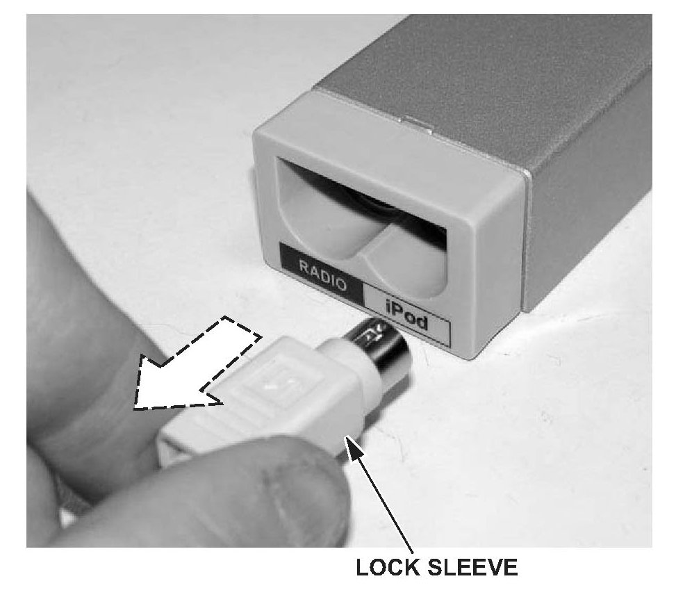

General Information
Music Link iPod Information Resources^ Online at http//musiclink.acura.com/Tech_Faq.html
^ Music Link Information Sheet (Acura ServiceNews, March 2006)
^ Music Link Frequently Asked Questions (Acura ServiceNews, March 2006)
^ Quick Reference Guide (supplied in Music Link kit)
^ User's Guide and Quick Reference Guide are available online:
http://musiclink.acura.com/Down_Ref.html
^ General information: www.apple.com, then select support.
^ iPod firmware (unit software) version information:
www.apple.com, then select Support.
^ iPod reset procedure: http://docs.info.apple.com/ article.html?artnum=61705
Resources for Installation Instructions
Online, enter the model and year, enter the keyword MUSIC LINK, and select the appropriate installation instructions.
Music Link First-Use Information
After installing the Music Link kit, switch the audio unit to AUX (auxiliary) mode and verify the audio unit displays CDC EJECT or CD4 EJECT. Connect the iPod to the Music Link connector. Make sure the check mark is displayed on the iPod display screen and that you hear music.
^ The Music Link disc supplied in the kit contains the TTS software and the User's Guide. It is for home computer use only.
^ The client needs to load the TTS software/User's Guide on his/her home computer in order for all of the search functions (Disc 1-4) to operate.
^ Only the shuffle functions (Disc 5-6) will operate without the TTS software installed (see the Quick Reference Guide).
^ For the search functions (Disc 1-4) to operate properly, TTS software must be run after any songs are changed (added or removed) on the iPod.
^ You can change the Disc position on most audio units by using the Disc - (preset number 5) and Disc + (preset number 6). Always refer to the User's Guide for proper operation.
iPod Reset Procedure Information
The iPod reset procedure applies to these Apple iPod models:
^ Fifth-generation or later iPod (also known as iPod with video)
^ iPod nano(R)
^ iPod with color display (iPod photo)
^ iPod mini(R)
NOTE:
To view this information online, log on to http//docs.info.apple.com/article.html?artnum=6 1705
To reset the client's iPod:
1. Cycle the Hold switch on and off (slide it to Hold, then turn it off again).
2. Press and hold the Menu and Select buttons for 6-10 seconds until the Apple logo appears.
NOTE:
If you are having difficulty resetting the iPod, set it on a flat surface. As you press the Select button, make sure your finger does not touch any part of the click wheel. Also make sure that you press the Menu button toward the outside of the click wheel and not near the center.
3. If the above steps do not work, try connecting the iPod to a power adapter and plug the power adapter into an electrical outlet, or connect the iPod to your computer. Make sure the computer is on and isn't set to sleep mode.
BEFORE TROUBLESHOOTING
^ Before troubleshooting, ask the client these questions:
- What is the main issue?
- What model and generation iPod do you have? Refer to www.apple.com.
- What version iPod firmware (unit software) is loaded?
^ Go to the Main Menu.
^ Select Settings.
^ Select About.
- What iTunes version are you using?
- What TTS software version is installed?
^ Make sure you have the client's iPod for troubleshooting.
^ Turn on the iPod, and verify its battery is fully charged before testing. If the battery is low, the iPod will not "wake up" when connected.
^ Some iPod protective cases cause the Music Link iPod connector to be installed crookedly or not fully engaged. Be sure to remove the protective case before troubleshooting.
^ Go to http//musiclink.acura.com/Tech_Faq.html to view technical FAQs and troubleshooting.
TROUBLESHOOTING
Check mark is not shown on the iPod display screen, radio will not switch to CD-C or CD-4 mode.
NOTE:
Remove the iPod protective case, if installed.
1. At the Music Link interface unit, make sure both connectors are fully engaged, and the cables do not have any broken or bent pins.

NOTE:
To release the Music Link interface unit connectors, you must pull back on the lock sleeves.
Does either cable have the connector partially disengaged, or are any pins broken or bent?
Yes - Reconnect or replace the loose or damaged cable.
No - Go to step 2.
2. At the audio unit, make sure the cable connectors and the connector pin fits are tight. Also check that the optional Y-bus harness (if installed) connector and connector pin fits are tight.
Do the cable connections and pins fit properly?
Yes - Replace the Music Link interface unit and the cable.
No - Repair the faulty connection at the audio unit.
Static, or weak or no volume over speakers only in Music Link mode.
NOTE:
Remove the iPod protective case, if installed.
1. At the iPod, make sure the iPod connector is fully engaged.
Is the iPod connector fully engaged? Yes - Go to step 2.
No - Properly connect the iPod connector and retest. Replace the cable if the connector is loose or damaged.
2. Disconnect the client's iPod.
3. Connect headphones to the iPod, and listen to the sound quality.
Is the sound quality normal in the headphones? Yes - Go to step 4.
No - There is static from the client's uploaded music. If the volume is weak or low, verify the iTunes sound level setting.
4. Connect a known-good iPod and retest. Is the sound quality normal over the speakers?
Yes - The vehicle is functioning normally. Do an iPod reset on the client's iPod and retest. If the problem does not go away, have the service advisor explain to the client that the vehicle is operating properly and advise the client to:
^ Install the latest iPod firmware.
^ Consult the general information at www.apple.com.
This is not a comprehensive list, only a suggested starting point for the client to troubleshoot the iPod.
No - Go to step 5.
5. Disconnect the known-good iPod.
6. Do a vehicle battery cable reset:
^ Remove the negative and positive battery cables. Use a jumper wire to short the two cables together, then turn the ignition switch to ON (II) and wait 15 minutes.
^ Turn the ignition switch to LOCK (0), and remove the jumper wire. Reconnect the positive battery cable first, then reconnect the negative cable.
7. Reconnect the client's iPod and retest. Is the sound quality normal over the speakers?
Yes - It is an intermittent audio unit/Music Link failure, and the system is OK at this time.
No - Do the "Check mark is not shown on iPod display screen, radio will not switch to CD-C or CD-4 mode" troubleshooting.
Music Link has no sound, check mark is shown on iPod display screen.
1. At the Music Link interface unit, make sure both connectors are fully engaged, and the cables do not have any broken or bent pins.
NOTE:
To release the Music Link interface unit connectors, you must pull back on the lock sleeves.
Does either cable have the connector partially disengaged, or are any pins broken or bent?
Yes - Reconnect or replace the loose or damaged cable.
No - Go to step 2.
2. At the audio unit, make sure the cable connectors and the connector pin fits are tight. Also check that the optional Y-bus harness (if installed) connector and connector pin fits are tight.
Do the cable connections and pins fit properly?
Yes - Substitute a known-good iPod and retest. If the sound is normal, do an iPod reset, and retest.
NOTE:
Known-good test iPods are available from Tech Line.
No - Repair the faulty connection at the audio unit.
Music Link has no sound, the disc number and track number flashes on the audio display.
Disconnect and reconnect the iPod, then retest. Does Music Link operate normally?
Yes - The iPod connector pins are loose. Replace the cable if the connector is damaged.
No - There is a firmware error. Advise the client to install the latest iPod firmware (unit software).
Check mark is shown on iPod display screen, radio does not switch to CD-C or CD-4 mode.
1. Make sure the audio unit works in all other modes. Does the audio unit work in all other modes? Yes - Go to step 2.
No - Do a vehicle battery cable reset, then retest:
^ Remove the negative and positive battery cables. Use a jumper wire to short the two cables together, then turn the ignition switch to ON (II) and wait 15 minutes.
^ Turn the ignition switch to LOCK (0), and remove the jumper wire. Reconnect the positive battery cable first, then reconnect the negative cable.
2. Remove the Music Link interface unit, and verify the software version is SW 1.06 or higher.
Is the software version SW 1.06 or higher?
Yes - Do the "Check mark is not shown on iPod display screen, radio will not switch to CD-C or CD-4 mode" troubleshooting.
No - Replace the Music Link interface unit and iPod cable.
iPod music and XM radio music play at the same time (TSX).
There is a software compatibility issue in the XM receiver unit. Refer to S/B 06-029, XM(R) Satellite Radio and Audio Accessories Play at the Same Time for repair information.
Music Link will not do Disc 1-4 search functions.
NOTE:
TTS software must be loaded on the client's home computer before Disc 1-4 search functions work.
1. Use a known-good iPod to verify that the search functions (Disc 1-4) work.
NOTE:
Known-good test iPods are available from Tech Line.
Does the known-good iPod do search functions (Disc 1-4)?
Yes - Verify with the client if the TTS software is loaded. If the client needs assistance, refer the client to Acura Client Services for assistance with TTS software loading problems.
No - Do the battery cable reset, then retest:
^ Remove the negative and positive battery cables. Use a jumper wire to short the two cables together, then turn the ignition switch to ON (II), and wait 15 minutes.
^ Turn the ignition switch to LOCK (0), and remove the jumper wire. Reconnect the positive battery cable first, then reconnect the negative cable.
2. If the problem does not go away, do "Check mark is not shown on iPod display screen, radio will not switch to CD-C or CD-4 mode" troubleshooting.
Artist is not categorized in the correct grouping when using (Disc 2) search function.
Make sure the "Compilations" setting is switched off in the settings menu on the client's iPod.
Is the "Compilations" setting switched off?
Yes - There is a TTS software program error. Tell the client to rerun the TTS software.
No - Change the "Compilations" setting on the client's iPod to off.
Song/Artist is not categorized in the correct grouping when using Disc 1-4 search functions.
Remind the client that the TTS software must be run after any songs are changed on the iPod, and advise them to run the TTS software and retest the iPod search functions.
Explain to the client that once the TTS software has run:
^ If the iPod functions properly, there was an intermittent TTS software program error.
^ If the iPod does not function properly, direct the client to contact Acura Client Services for assistance with TTS software loading problems.
CLIENT INFORMATION NEEDED BEFORE CALLING ACURA'S CLIENT SERVICES
Print this page, and give it to the client if they are experiencing a ITS software-related issue. Direct them to answer the questions, then contact Acura Client Services at (800) 382-2238.
Client Information
Before calling Acura Client Services, go to http//music/link.honda.com.Tech Faq.html and view the technical FAQs and troubleshooting. Also, go to www.apple.com, select support, and view the technical FAQs and troubleshooting.
Please have the following information ready when contacting Acura Client Services:
^ What is the main issue?
^ What type of iPod do you have? Refer to www.apple.com.
^ What version iPod firmware (unit software) is loaded? To find out what firmware (unit software) is loaded on the iPod:
- Go to the Main Menu.
- Select Settings.
- Select About.
^ What version iTunes are you using on your home computer?
^ When you connect your iPod to the vehicle's Music Link connector, is the check mark displayed on your iPod display screen?
^ What type of computer do you have (Mac or PC)?
^ What operating system are you using?
^ Have you loaded the TTS software on your home computer?
^ Do you run the TTS software every time you connect your iPod to your home computer?